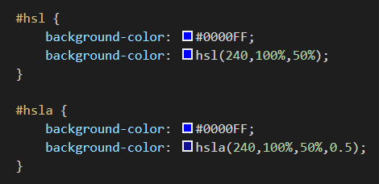

hsl & hsla
hsl
- With CSS3 came a new way to specify colors using hue, saturation, and lightness
- Hue is the color and is a number from 0 to 360
- Saturation refers to the amount of gray in the color and the value is given as a percent from 0% to 100%
- Lightness has to do with the amount of white or black in a color and is also given as a percent
hsla
- You can use hsla to apply color and opacity with one css rule
- It is a good idea to use a backup value for older browsers
